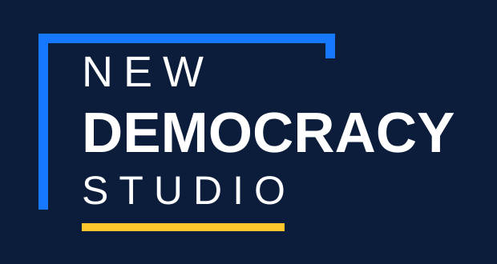

Work more effectively
Reduce repetitive work and create more space for mission-critical thinking and relationships.

New Democracy Studio
We help civic organizations become more capable, influential, and resilient—so democracy can be too.
Ideas
New Democracy Studio develops practical programs that help civic actors build capacity, strengthen their influence, and navigate a rapidly changing technological and information environment.
The stakes are bigger than productivity
Democracy and human-rights organizations are being asked to do more with fewer resources, while the information environment around them grows faster, more fragmented, and more technologically sophisticated.
Authoritarian actors are already using AI and digital systems to scale surveillance, censorship, disinformation, and political influence. Democratic organizations should not imitate those tactics—but they cannot afford to ignore the capabilities behind them.
Civic organizations have a different advantage: credible ideas, trusted relationships, strong communities, and values that connect with people. New technologies can help those voices work faster, reach further, coordinate better, and build public support.
Reduce repetitive work and create more space for mission-critical thinking and relationships.
Strengthen communications, understand audiences, advance narratives, and advocate more effectively.
Use technology to listen, engage, coordinate, and deepen human connection.
Find opportunities, strengthen proposals, and build more resilient sources of support.
Thinking for action
The Studio creates space for critical perspectives that can change how democratic problems are understood—and what people do next.
We develop and publish analysis at the intersection of democracy, technology, and the information environment, bring people together around the questions it raises, and look for ideas that can be tested in practice.
Convening
New Democracy Studio hosts conversations with experts, academics, thinkers, public officials, private-sector leaders, and civic actors from around the world about where democracy is heading and what the future might require.
Convening is how we generate and road-test ideas. It creates room for people working in different places and sectors to challenge assumptions, compare experience, and see possibilities that would be harder to find alone.
Some conversations should sharpen how we think. Others should lead to programs, partnerships, or experiments that can be tested in context.
Programs
The Studio supports practical programs, cohorts, training, community, and other forms of democratic capacity building. Start with a free monthly session, develop skills through an accelerator, or build lasting capability across an organization.
Free · Open · Once monthly
A free, open monthly mini-training for democracy professionals who want to start building their edge with AI.
Each salon focuses on a practical skill or workflow participants can begin applying immediately, with attention to privacy, accuracy, security, and responsible adoption.
→ The open salon is a starting point for the AI for Democracy Accelerator Cohort.
For individual practitioners
Deeper skill-building, practice, implementation, and peer support for people ready to apply new capabilities to real work.
A guided path from the fundamentals to confident, practical AI use—adaptable for participants who already have experience.
First cohort planned for October
Helping democracy experts build a credible presence, reach the right audiences, and contribute more effectively in the modern information environment.
For teams and institutions
Training and longer engagements designed around an organization’s needs, tools, workflows, and level of experience.
Focused workshops designed around a team’s priorities, tools, responsibilities, information risks, and level of AI experience.
Longer engagements combining shared learning, applied experimentation, implementation support, and organization-specific use cases.
About
Why a studio
The technology changes. The method is consistent: start with real work, understand the people and context, and use tools in ways that genuinely improve outcomes. The Studio brings ideas, debate, and experimentation into that same process—developing approaches that can be tested, improved, and shared.
Chief Democracy Officer
After two decades working in technology, global affairs, and democracy support, I have learned that democracy depends on people knowing they have the power to shape their own futures. Civic organizations make that power real: they help people organize, speak, solve problems, and hold institutions accountable. But they’re falling behind. We’re helping them take the lead again as authoritarian governance surges globally.
This work builds on more than 20 years leading international development programs, training people to use new technologies, applying human-centered and community-driven design, and working at the ideas level within a major global democracy-focused foundation.
Global practice
Select a story to see the context, action, and resolution.
The initial draft includes sourced stories where details are available and placeholders where Adam’s account is still needed.
Contact
Bring us a challenge, an emerging idea, or a team ready to build new capacity. Let’s find out what we can make possible together.